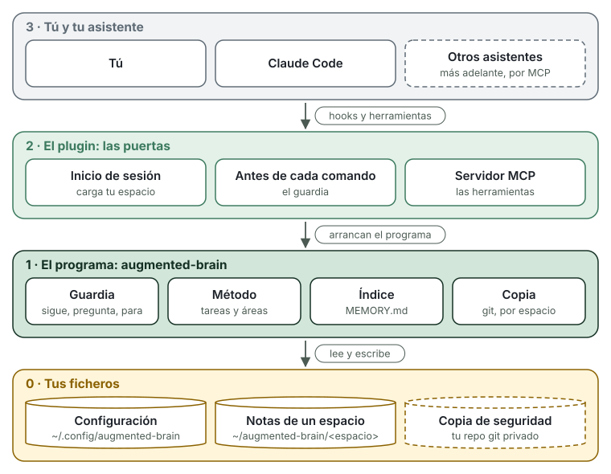
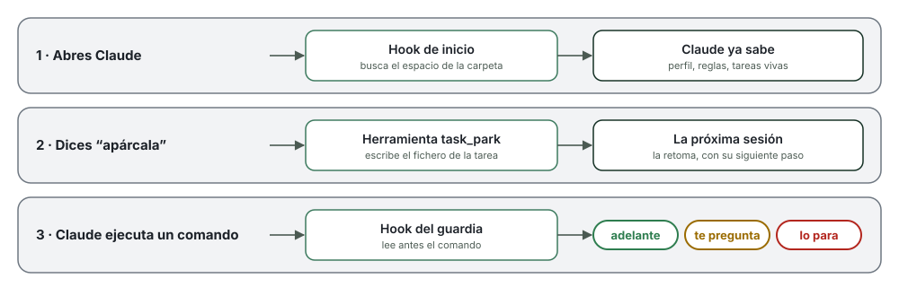

augmented brain
augmented brain
Cómo funciona
augmented brain es un programa pequeño y una carpeta de notas. Así encajan las piezas:

Cuatro capas
| Capa | Qué es | Dónde vive |
|---|---|---|
| 3 · Tú y tu asistente | Hablas con Claude Code como siempre. No hay comandos nuevos que aprender. | Tu terminal |
| 2 · El plugin | Las puertas por las que Claude entra al programa: dos hooks y un servidor MCP. | Dentro de Claude Code, que lo instala |
| 1 · El programa | augmented-brain, un solo fichero. Vigila los comandos, lleva las tareas, rehace el índice y hace la copia. | ~/.local/bin/augmented-brain |
| 0 · Tus ficheros | Texto normal: la configuración, tus notas y, si quieres, su copia. | ~/.config/augmented-brain/, ~/augmented-brain/ y tu repo git |
Dicho de otra forma: tus notas son un cuaderno, el programa es quien lo ordena y el plugin es la puerta. Tú solo hablas con Claude; Claude entra por la puerta y el programa escribe en el cuaderno.
Dos palabras que salen mucho:
- Hook: un aviso que Claude Code lanza en un momento concreto. Aquí, al empezar la sesión y antes de cada comando. En cada aviso, Claude Code arranca el programa, le pregunta y el programa termina. No queda nada funcionando de fondo.
- MCP (Model Context Protocol): un estándar abierto para dar herramientas a un asistente. El programa ofrece las suyas (“abre una tarea”, “apárcala”) y Claude las usa. Al ser un estándar, otros asistentes podrán usar las mismas.
Una sesión, paso a paso

1. Abres Claude. El hook de inicio mira en qué carpeta estás y elige tu espacio. Antes de que escribas nada, le pasa a Claude tu perfil, tus reglas y la lista de tareas vivas. Por eso sabe dónde lo dejaste.
2. Dices “apárcala”. Claude usa la herramienta task_park. El programa apunta en el fichero de la tarea dónde se quedó y cuál es el siguiente paso, y rehace el índice. La próxima sesión empieza desde ahí. Abrir, retomar y cerrar funcionan igual.
3. Claude va a ejecutar un comando. El hook del guardia lo lee antes y decide:
- Adelante: casi siempre.
ls,go test,aws --profile dev s3 ls. - Te pregunta: producción, o una máquina que marcaste como intocable.
aws --profile prod …,ssh db01 …. - Lo para: subir código, root y secretos.
git push,sudo …, un token en un comando.
También mira dentro de ssh, de bash -c y de los bucles. Es una red contra despistes, no un muro de seguridad: lee el aviso legal.
Tus ficheros
Todo vive en ~/augmented-brain, con una carpeta por espacio. Trabajas dentro de ella, y sus notas van en notas/:
~/augmented-brain/
├── trabajo/ abre Claude aquí para lo del trabajo
│ ├── notas/
│ │ ├── MEMORY.md el índice que Claude lee al empezar (lo genera el programa)
│ │ ├── inbox.md apuntes rápidos, para ordenar luego
│ │ ├── areas/ lo que cuidas siempre: "la web", "los servidores"
│ │ ├── tasks/ un fichero por tarea
│ │ ├── knowledge/ cómo funcionan las cosas y lo aprendido
│ │ ├── people/ con quién tratas, para saber quién es "Marcos"
│ │ ├── rules/ reglas solo de este espacio
│ │ ├── reviews/ revisiones semanales
│ │ └── archive/ lo antiguo; no se carga y no se borra
│ └── (tus proyectos)
└── personal/ y aquí para lo personal, con sus propias notas/Tu perfil, quién eres y cómo te gusta trabajar, es uno para todos los espacios: ~/.config/augmented-brain/profile.md. No hace falta escribirlo a mano: la primera vez que abres Claude, te hace seis preguntas rápidas, explicándote el porqué de cada una. Con tus respuestas guarda el perfil, crea tus áreas, le dice al guardia qué es producción y qué máquinas no se tocan, y apunta a las personas con las que trabajas. Para cambiar cualquier cosa, díselo.
Una tarea es un fichero de texto. Arriba, entre las líneas ---, los datos que usa el programa. Debajo, lo que escribís tú y Claude:
---
id: task-anadir-un-formulario-de-contacto
type: task
title: Añadir un formulario de contacto
area: area-web
status: parked
waiting_on: me
next: Escribir el plan
created: "2026-10-15"
updated: "2026-10-15"
---
## Lo esencial
Nombre, correo y mensaje, enviado por email.
## Diario
- 2026-10-15 — Tarea abierta.
- 2026-10-15 — Aparcada. Siguiente: Escribir el planPuedes abrir y editar todo con cualquier editor. El formato completo está en memory-format.md (en inglés).
Trabajo y personal, separados
Un espacio es un juego completo de notas, reglas y copia. El instalador crea dos, trabajo y personal. La carpeta donde abres Claude elige el espacio, según tu configuración:
# ~/.config/augmented-brain/config.toml
default_space = "personal"
[spaces.trabajo]
memory = "~/augmented-brain/trabajo/notas"
work_folders = ["~/augmented-brain/trabajo"]
[spaces.personal]
memory = "~/augmented-brain/personal/notas"
work_folders = ["~/augmented-brain/personal"]En ~/augmented-brain/trabajo/web, Claude ve las notas del trabajo. En ~/augmented-brain/personal/blog, las personales. Nunca se mezclan.
¿Y si abres Claude en otra carpeta? Por ejemplo, la app de escritorio empieza cada sesión nueva en una carpeta temporal suya. Entonces se usa el espacio por defecto, personal, y Claude te lo dice en una línea, con cómo pasar al de trabajo. Puedes cambiarlo en default_space, o quitarlo.
¿Tus proyectos ya viven en otra carpeta, como ~/code? Añádela a work_folders del espacio que toque. Para un espacio nuevo (un cliente, por ejemplo): augmented-brain space add cliente.
La copia de seguridad
La carpeta de notas de cada espacio es también un repositorio git. La copia lo sube a un repositorio privado tuyo. Se monta una vez:
augmented-brain backup setup git@github.com:tu-usuario/mi-cerebro.gitY desde entonces, cuando quieras (al acabar el día, por ejemplo):
augmented-brain backup # este espacio
augmented-brain backup --all # todosLo que te da:
- Una máquina nueva en minutos.
augmented-brain restore <url>trae el espacio entero: notas, tareas, reglas, tu perfil y la configuración del espacio. Abres Claude y sigue donde lo dejaste. - Varias máquinas, un solo cerebro. Antes de subir, la copia trae lo que hizo tu otra máquina y lo mezcla.
- Todo el historial. Cada copia es un commit de git, con la máquina y la hora. Con
git logves qué cambió y puedes volver a cualquier día. - En tu sitio. GitHub, GitLab o tu servidor: el repositorio lo eliges tú. No hay nube de augmented brain.
- Un repositorio por espacio. El del trabajo puede ir al git de la empresa y el personal al tuyo.
- No sube secretos. Si una nota tiene algo que parece una contraseña o un token, la copia se para y te dice en qué fichero.
- No pisa nada. Si dos máquinas cambiaron la misma nota, se para sin tocar nada y te explica cómo resolverlo. El índice, que es generado, se rehace solo.
Todavía no se lanza sola: es un comando tuyo.
Lo que no hace
- No hay servidor ni cuenta. Si Claude no está abierto, no funciona nada.
- No envía datos a nadie. Solo la copia, si la configuras, habla con tu repositorio.
- No toca tus ajustes de Claude Code. El plugin se pone y se quita con los comandos de Claude Code.
- Ojo: tu asistente lee tus notas, como cualquier fichero que abre. Viajan con tus conversaciones a su proveedor. No guardes ahí lo que no compartirías.
Quitarlo
claude plugin uninstall brain@augmented-brain
claude plugin marketplace remove augmented-brain
rm ~/.local/bin/augmented-brain
rm -r ~/.config/augmented-brain # configuración y perfilTus notas se quedan en ~/augmented-brain/. Son tuyas.